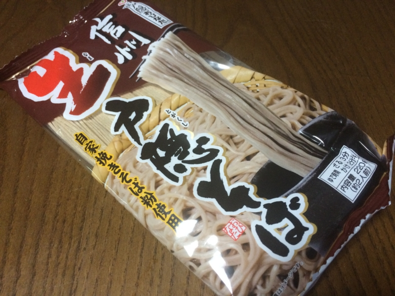
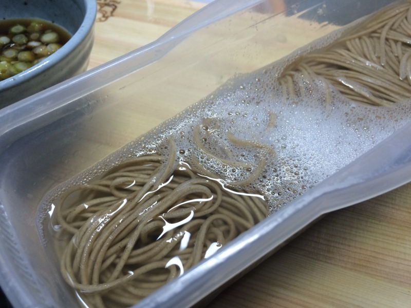
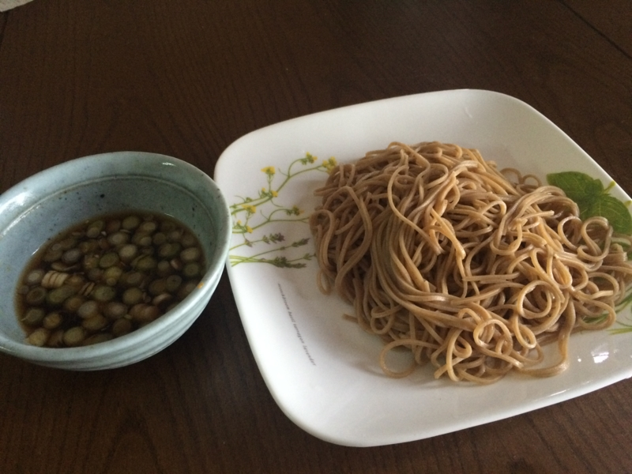

「電子レンジで簡単パスタ」で蕎麦を茹でてみた。
公開日：

- 出版社/メーカー: エビス
- メディア: ヘルスケア&ケア用品
- 購入: 60人 クリック: 752回
- この商品を含むブログ (40件) を見る
（ダイソーのモノとは違うけれど、似たようなもの）
これまで電子レンジでいろいろ調理できるグッズをダイソーでいくつか購入したが――
やはり一番役に立つのは「電子レンジで簡単パスタ」。水が節約できるとかいう以前に、鍋の前で待っていなくていいのがありがたい。たまに電子レンジでチンしたまま放置しちゃって伸びちゃうこともあるけれど、ベーコンとか野菜と一緒に鍋で炒め、水を飛ばして味を調えれば、まぁ、そんなに食べられなくもない。独り暮らしにはめちゃくちゃ楽なんだな、これ。
![グラノロ スパゲッティ リストランテ 1.6mm 3kg [並行輸入品]](https://images-fe.ssl-images-amazon.com/images/I/513SPbVysBL._SL160_.jpg "グラノロ スパゲッティ リストランテ 1.6mm 3kg [並行輸入品]")
グラノロ スパゲッティ リストランテ 1.6mm 3kg [並行輸入品]
- 出版社/メーカー: グラノロ
- メディア: 食品&飲料
- 購入: 22人 クリック: 42回
- この商品を含むブログ (1件) を見る
ちなみに、パスタは Amazon で買ったこれを食べてる。「電子レンジで簡単パスタ」ならば、600W で13分ほど。うちのアホでも使える電子レンジは、タイマーがぜんまい式の割とおおざっぱなものなので、時間の設定もいきおい大まかなものにならざるを得ないのだけど、要領を得てからは一度も失敗していない。よくスーパーに並んでいるブランドのモノに比べると若干癖はあるが、食べ慣れるとこちらも悪くないものだと思う。なんといっても、安いしな。
――それはともかく。
この商品、「電子レンジで簡単パスタ」という名前なのだけど、パスタじゃないといけないのだろうか。たとえば、うどんや蕎麦では都合が悪いのだろうか。ぶっちゃけ、最近はパスタに飽きてきたのだけど、鍋でうどんだの蕎麦だのを茹でるのはメンドクサイ。なんでも「電子レンジで簡単パスタ」でやれればいいのだが。
というわけで、やってみた。

今回の獲物は、戸棚の奥底に隠されていた蕎麦。その名も、戸隠そば（違
内容量は2人前220g、一人前ずつ密封されているので、1袋あたり110gということになる。ゆで時間はざるの場合で3分との由。「電子レンジで簡単パスタ」には“ゆで時間＋5分”とあるので、単純に蕎麦にもそれを適用してみる。電子レンジ（600W）のタイマーを8分辺りでセット。

茹であがった。1本食べてみたけど、固くはない。麺を冷水で洗い、ネギを刻み、ワサビを入れた出汁を準備して早速試食。

ごくフツー、うまくも不味くもない、ザ・蕎麦。そのままツルツルっと胃袋に収まり、違和感のない蕎麦。あぁ、これで蕎麦をレパートリーに加えることができる！ たぶん、うどんもいけるんではないだろうか。「電子レンジで簡単麺類」に改名してもよいと思った。
賞味期限が13年7月だったのは見ないことにした。
— だるやなぎ に天使が舞い降りた！ (@daruyanagi) 2015年2月21日